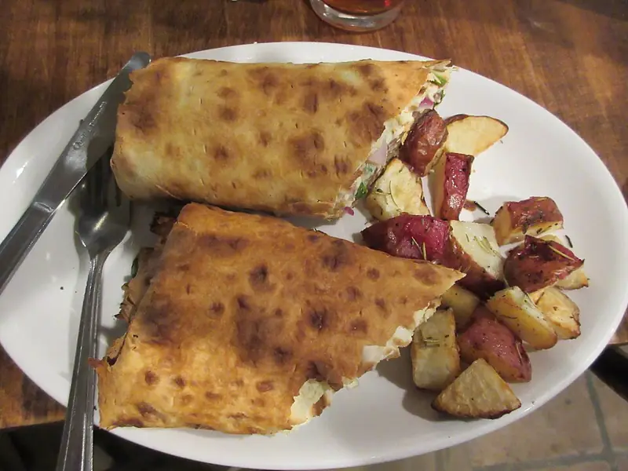

Фото: Infrogmation of New Orleans, CC BY 2.0

Лаваш-ролл с сыром и зеленью
Холодная закуска из лаваша со сливочным сыром, огурцом и зеленью
15 мин4 порц.332 ккал на порциюБ 13 · Ж 18 · У 29Интернациональная кухня
Продукты на 4 порц.
- Лаваш тонкий2 шт
- Сливочный сыр200 г
- Сыр твёрдый80 г
- Огурцы1 шт
- Укроп1 пучок
- Петрушка0,5 пучка
- Зелёный лук15 г
- Чеснок1 зуб.
- Салат листовой по желаниюпо вкусу
Как готовить
- Мелко порубите укроп, петрушку и зелёный лук. Чеснок пропустите через пресс.
- Смешайте сливочный сыр с зеленью и чесноком.
- Твёрдый сыр натрите на мелкой тёрке, огурец нарежьте тонкой соломкой.
- Разложите лаваш, ровно промажьте сырной массой, оставив 2 см свободного края.
- Посыпьте тёртым сыром, разложите огурец и листья салата.
- Плотно сверните рулетом, заверните в плёнку и уберите в холодильник на 30 минут.
- Нарежьте острым ножом на кусочки шириной 2-3 см.
Совет. Свободный край лаваша без начинки не даст рулету раскрыться. Огурец обсушите, иначе лаваш размокнет. Готовить лучше не раньше чем за 6 часов до подачи.